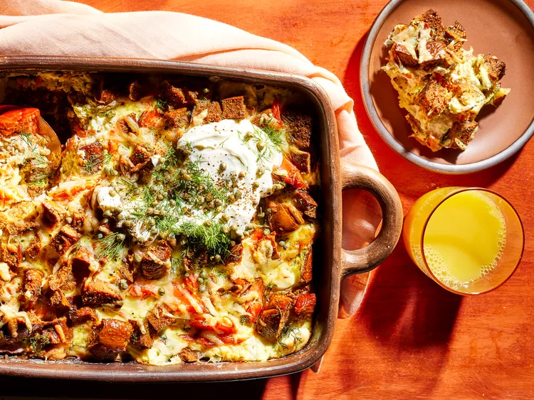

Smoked Salmon Breakfast Casserole
Rye bagels, hot-smoked salmon, and cream cheese combine for a stick-to-your-ribs egg bake. If you can’t find rye bagels at the supermarket, look for them at local bakeries.

Ingredients
- 6 rye bagels - split, toasted, and cut into 1/2-inch pieces
- 2 cups shredded Swiss or provolone cheese
- 1 (8 ounce) package cream cheese, cut into 1/2-inch pieces
- 8 ounces hot-smoked salmon, skin removed, coarsely flaked
- 8 large eggs, lightly beaten
- 2 cups whole milk
- 1/2 cup sour cream, plus more for serving
- 1/4 cup chopped fresh dill, plus more for garnish
- capers and lemon wedges, for serving
Directions
- Preheat the oven to 325 degrees F (165 degrees C). Coat a 9x13-inch baking dish with cooking spray.
- Spread half of the toasted bagel pieces in prepared dish. Top with 1 1/2 cups Swiss cheese, the cream cheese, and smoked salmon. Top with remaining bagel pieces.
- Whisk together eggs, milk, sour cream, and dill in a bowl. Pour over mixture in baking dish. Press bagel pieces with the back of a spoon to coat in egg mixture.
- Bake in the preheated oven for 45 minutes. Sprinkle with remaining 1/2 cup cheese. Bake 5 to 10 minutes more, until set and an instant-read thermometer inserted into center of casserole registers 160 degrees F (71 degrees C). Let stand about 10 minutes before serving. Garnish with additional dill and serve with capers, lemon wedges, and/or additional sour cream.